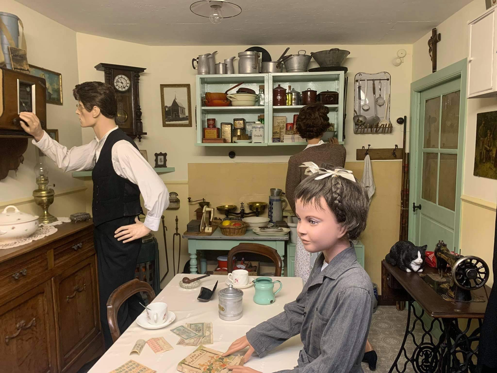
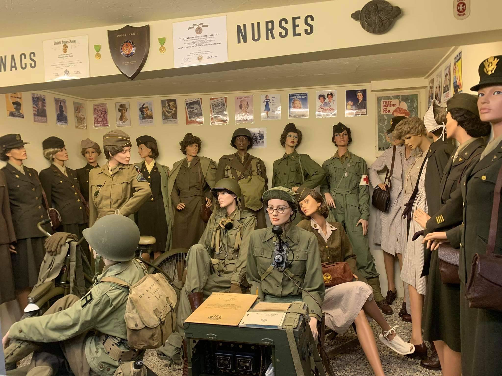

Construit dans le jardin de la maison familiale, ce musée privé a été conçu de toutes pièces par un passionné.
Vous y trouverez une immense collection d'objets concernant les deux guerres mondiales, ainsi que des mises en scènes permettant une impressionante immersion dans le passé.
Mais ce qui fait avant tout le charme de ce musée, c'est la passion dévorante que nous transmettent Yves et sa femme Christine, à travers leurs explications accessibles et leurs connaissances insatiable sur le sujet.
En plus de vous proposer des visites guidées, le couple participe fréquement à des commémorations, des reconstitutions historiques, ainsi que divers évènements en rapport avec les deux guerres mondiales.
Si vous voulez en apprendre plus, ou faire découvrir à vos proches des trésors de mémoire, n'hésitez pas à venir nous rendre visite.
Les femmes à l'Honneur
Ce qui fait la distinction entre les musées habituels et ce Musée de la Libération, c'est bien la place des femmes.
Vous trouverez ici bon nombre de situations où celles-ci sont mises à l'honneur durant la guerre . Après tout, elles aussi étaient là et ont participé à ces périodes marquantes de notre histoire.
